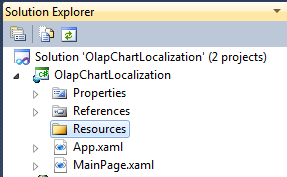
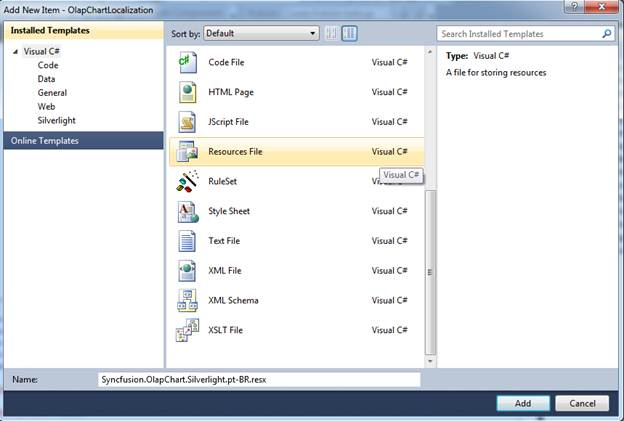
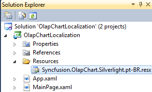
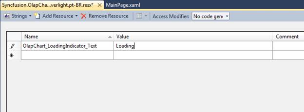
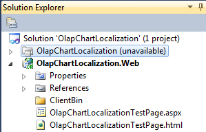
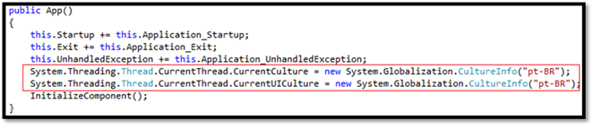

To add the localization feature to an application, follow the steps given below:
1. Create a Silverlight application.

Figure 45 New Project Dialog Window
2. Add a folder into the Silverlight project and name it as “Resources” as shown in the following screenshot:

Figure 46 Solution Explorer with “Resoures” folder
3. Right-click on the Resources folder and select Add -> New Item from the context menu. From the dialog shown, select Resource File and name it as shown below:
“Syncfusion.OlapChart.Silverlight.<cultureCode>.resx”
For an instance, the file name for the Portuguese-Brazil culture could be: Syncfusion.OlapChart.Silverlight.pt-BR.resx
Refer to the following link for culture codes:
http://msdn.microsoft.com/en-us/library/system.globalization.cultureinfo(v=vs.71).aspx

Figure 47 Add New Item Dialog Window
Now, the Syncfusion.OlapChart.Silverlight.pt-BR.resx file is added to the Silverlight project.

Figure 48 Solution Explorer with added resource file
4. Open the resource file, fill the name and translate the value according to your locale with respect to the above table.

Figure 49 Resource Editor Window
To switch the application between different languages, you have to specify the supported culture in the Silverlight project file.
5. In order to specify the supported culture in the Silverlight project file, unload the project by right clicking over the Silverlight project and select “Unload Project” from the context menu.
The project is unloaded from the solution as shown below:

Figure 50 Solution Explorer with Unloaded Project
6. Right-click on the Silverlight project file and select the Edit project from the context menu. This brings the metadata of the Silverlight project.
7. Look for the <SupportedCultures> tag within the <PropertyGroup> tag and add the culture code inside the <SupportedCultures> tag.
For multiple cultures, add each culture code within the same tag separated by a semicolon (;).

Figure 51 Metadata of Silverlight project
8. Save the *.csproj file. Right-click and select “Reload Project”, to reload the unloaded project.
9. Add the following code inside the App constructor to set the current culture:

Figure 52 App Constructor
|
[C#] System.Threading.Thread.CurrentThread.CurrentCulture = new System.Globalization.CultureInfo(“pt-BR”); System.Threading.Thread.CurrentThread.CurrentUICulture = new System.Globalization.CultureInfo(“pt-BR”); |
Note: The bidirectional support can be utilized through setting the FlowDirection propertys.
|
[C#] if (Threading.Thread.CurrentThread.CurrentUICulture.ToString() == “ar”) { this.olapChart.FlowDirection = System.Windows.FlowDirection.RightToLeft; } |